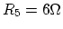

Take home, open everything except discussion. Due Wednesday in class.
Show your own work, no commercial software is allowed in the exam
(hand-held calculator is fine).
Compare your print-out of the exam with the online version to make
sure your hard copy is complete.
Mark your name and question number clearly on top of each page.
Indicate the total number of pages submitted.
When solving a problem, list all the steps. In each step, describe
concisely what you are doing in English, then show the calculation
and the result of the step. A final answer, even if correct, without
evidence of the steps leading to the answer will not receive credit.
The Problems
Problem 1. (33 points)
Show the relationship between the output voltage and the three input
voltages , and of the circuit shown below, where all
resistors have the same resistance value. Extrapolate your result to cover
the general case of inputs , .
Problem 2. (34 points)
In the figure below, , ,
,
, , . Find voltage
Problem 3. (33 points)
In the circuit below, , ,
, ,
. Find the current through .